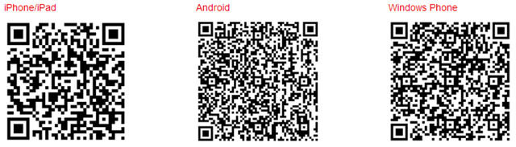

Vue d'ensemble
Photo Station est une application Web conçue pour vous aider à organiser et afficher les photos stockées sur votre NAS Synology sur Internet. Avec son interface raffinée et conviviale, Photo Station vous permet de charger, parcourir, gérer et partager vos albums photos en quelques simples clics.
1. Installer Photo Station
Pour installer Photo Station, veuillez aller dans Centre de paquets, trouvez Photo Station, puis cliquez sur Installer.

2. Charger les photos
Avant de pouvoir parcourir et gérer les photos dans Photo Station, vous devez d'abord créer des albums et charger des photos avec une des méthodes suivantes.
2.1 Charger les photos via Photo Station Uploader (pour Windows et Mac)
Nous vous recommandons d'utiliser Photo Station Uploader parce les miniatures de chaque photo à afficher seront générées pendant le processus de chargement. Le chargement de fichiers via Photo Station Uploader tirera parti de la capacité de calcul de votre ordinateur pour accélérer la conversion.
- Téléchargez et installez Photo Station Uploader (disponible sur le Centre de téléchargement de Synology).
- Sur votre ordinateur, faites un clic droit sur les photos que vous souhaitez charger, puis choisissez Charger sur Photo Station > Créer un nouveau profil pour ouvrir l'assistant.
- Entrez un nom de votre choix et le nom du serveur/adresse IP du NAS Synology de destination pour le nouveau profil.
- Choisissez si vous souhaitez charger les fichiers vers Photo Station ou Photo Station personnel.
- Entrez les identifiants d'utilisateur pour le NAS Synology de destination.
- Cliquez sur Parcourir pour choisir un dossier de destination ou créer un sous-dossier dans le dossier partagé photo.
- Une fois le chargement terminé, vous pouvez lancer Photo Station sur votre NAS Synology et afficher les fichiers chargés dans différents modes ou modifier d'autres informations, comme les propriétés de l'album et les privilèges d'accès.

Les informations du serveur et les identifiants d'utilisateur fournis seront enregistrés dans ce profil pour une utilisation future. Vous pouvez configurer plusieurs profils selon des règles ou destinations différentes. Au lieu de remplir les informations du serveur à nouveau la prochaine fois que vous utilisez Photo Station Uploader, vous pouvez sélectionner un profil existant et utiliser ses configurations définies précédemment pour charger des photos vers la même destination.

2.2 Créer des albums et charger les photos via Photo Station
Lancez Photo Station, et cliquez sur Ajouter pour créer un nouvel album ou charger des photos depuis votre ordinateur ou NAS Synology à des albums existants.

Si vous préférez charger les photos via l'interface de Photo Station, il est fortement recommandé d'activer le service QuickConnect. Que vous soyez à la maison ou en déplacement, QuickConnect vous permet d'accéder à votre NAS Synology et à Photo Station depuis n'importe où via Internet avec un ID personnalisé mais sans les inconvénients d'avoir à définir des configurations de réseau complexes, comme les règles de transmission de ports. Pour plus d'informations sur QuickConnect, reportez-vous à ce tutoriel.
3. Partager les photos
Avec la fonction de partage, vous pouvez facilement partager les photos stockées sur Photo Station avec des amis ou charger les photos sur les réseaux sociaux populaires tels que Facebook, Picasa et Flickr.
3.1 Partager les photos avec le public
- Naviguez jusqu'à un album et sélectionnez les photos que vous souhaitez partager.
- Cliquez sur Partager > Partager avec le public pour obtenir le lien.
- Si vous avez sélectionné une seule photo à partager, la photo sera ajoutée à un album partagé par défaut nommé Photos partagées. Il vous permet de gérer toutes les photos que vous avez partagées une par une.
- Si vous avez sélectionné plusieurs photos à partager, les photos seront groupées dans un nouvel album partagé.
- Vous pouvez également cliquer sur Partager > Ajouter à un album partagé pour ajouter les photos sélectionnées à un album partagé existant (si applicable).
- Entrez un nom pour le nouvel album partagé, et spécifiez la période de validité si nécessaire.
- Copiez et collez le lien dans les e-mails, messages instantanés, et pages Web pour partager les photos sélectionnées avec tout le monde.

- Toutes les photos partagées sont accessibles publiquement par n'importe qui avec le lien.
- Vous pouvez spécifier quels utilisateurs peuvent avoir le privilège de partager les éléments de Photo Station avec le public dans Paramètres > Partage.
3.2 Partager les photos avec les réseaux sociaux
- Sélectionnez les photos que vous souhaitez charger puis sélectionnez Partager > Charger vers [sites Web de réseaux sociaux].
- Dans la fenêtre qui apparaît, cliquez sur Se connecter avec [sites Web de réseaux sociaux], et autorisez avec votre compte de réseau social. Vous pouvez choisir de charger les photos vers un nouvel album ou un album existant.

4. Organiser et parcourir les photos sur les appareils mobiles
Pour vous connecter à Photo Station ou charger des photos via les appareils mobiles, vous pouvez installer DS photo+ sur vos appareils mobiles avec les codes QR ci-dessous.
